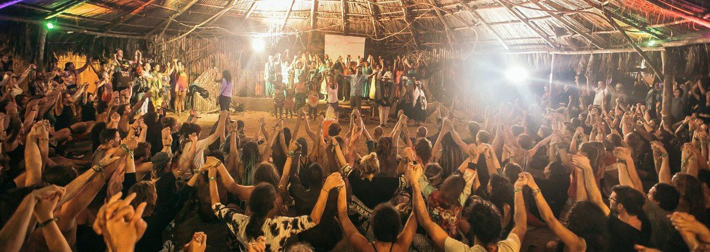

Festivals · Music
Tribal Gathering Panama 2027
- Dates
- –
- Venue
- Hippie Beach, Caribbean coast (Colón)
- Location
- Nuevo Chagres, Panama
- Format
- In-person
- Category
- Music
- Industry
- Music / Culture
- Organiser
- Tribal Gathering
- Price
- USD 400 for the full 18-day pass (fourth wave; next wave USD 450); shorter passes also sold (24 Nov 2026)
- Official website
- https://www.tribalgathering.com/
- Tickets
- https://geostore.tribalgathering.com/event-passes
About
18-day camping gathering on a remote jungle beach; the FAQ places the nearest village (Nuevo Chagres) about 1 km from the main gates. Panama dates are local (Panama time, UTC-5 all year, no daylight saving).
Topics: electronic music, world music, indigenous culture, camping.
No organiser attendance figure found on the official pages checked (24 Nov 2026). Ranked by an estimated size tier 'medium' (about 1,000-10,000 attendees; our judgement from format, venue and scale, not an official number).
Sources
- Official — https://www.tribalgathering.com/
- Official — https://www.tribalgathering.com/tg27-faq
- Official (organiser's ticket store) — https://geostore.tribalgathering.com/event-passes